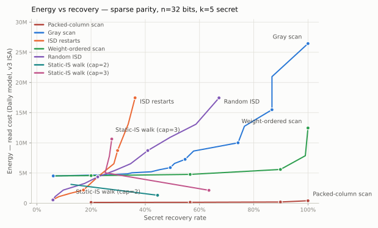

Sparse parity
The k-parity of a bit string is the sum mod 2 of its k secret bits.
Task: given the m strings and their parities, figure out the locations of the secret bits. Every instance: n = 32 bits, k = 5 secret positions, m = 18 strings.
We are looking for the lowest-energy solutions at 20%, 40%, 60%, 80% and 100% accuracy, measured on the simplified Bill Dally model (v3 instruction set, 8-bit). Accuracy is the secret recovery rate — the fraction of instances where all 32 output cells exactly match the hidden mask.
| Date | Cost | Submission | Contributors | Description |
|---|---|---|---|---|
| 2026-09-02 | 86,753 | ir, py, audit | @b0nce | generate_packed_static20() (packed static information set) ★ best |
| 2026-08-31 | 151,117 | ir, report, py | @npow | generate_packed_sis(cap=2, seed=13, g2=8) (packed SIS, partial cap-2 walk, exhaustive information-set tuning) |
| 2026-08-30 | 1,317,480 | ir, report, py | @zh4ngx | optimize_layout(generate_sis_mask(1, 2)) (static-IS walk) |
| 2026-08-27 | 17,331,683 | report, py | @yaroslavvb | generate_scan(127) (Gray scan) |
| 2026-08-26 | 12,042,480 | ir, report, py | @yaroslavvb | generate_isd_mask(8) (ISD restarts) |
| Date | Cost | Submission | Contributors | Description |
|---|---|---|---|---|
| 2026-09-01 | 141,218 | ir, report, py | @npow | 55 audited weight-2 states + compact flow + reverse route ★ best |
| 2026-09-02 | 147,000 | ir, py | @b0nce | generate_packed_route40() (cap-2 Gray prefix) |
| 2026-08-31 | 163,378 | ir, report, py | @npow | generate(1, 2, seed=5) (bit-packed SIS walk, 3-phase layout, higher dev recovery) |
| 2026-08-30 | 1,317,480 | ir, report, py | @zh4ngx | optimize_layout(generate_sis_mask(1, 2)) (static-IS walk) |
| 2026-08-28 | 17,418,235 | ir, report, py | @zh4ngx | generate_scan(0, walk="weight", weight_cap=2) (weight-ordered scan) |
| 2026-08-27 | 18,764,343 | report, py | @yaroslavvb | generate_scan(1023) (Gray scan) |
| 2026-08-27 | 17,945,660 | ir, report, py | @yaroslavvb | generate_scan(511) (Gray scan) |
| Date | Cost | Submission | Contributors | Description |
|---|---|---|---|---|
| 2026-09-01 | 149,665 | ir, report, py | @npow | 19 audited weight-3 states + compact flow + reversed 2-opt walk ★ best |
| 2026-09-02 | 176,331 | ir, py | @b0nce | generate_packed_route60() (cap-3 Gray prefix) |
| 2026-08-31 | 284,049 | ir, report, py | @npow | generate_packed_sis(cap=3, seed=13) (bit-packed SIS walk, full cap-3, tuned seed) |
| 2026-08-30 | 2,137,725 | ir, report, py | @zh4ngx | optimize_layout(generate_sis_mask(1, 3)) (static-IS walk) |
| 2026-08-28 | 18,509,753 | ir, report, py | @zh4ngx | generate_scan(0, walk="weight", weight_cap=3) (weight-ordered scan) |
| 2026-08-27 | 26,951,367 | report, py | @yaroslavvb | generate_scan(6143) (Gray scan) |
| 2026-08-26 | 23,676,539 | ir, report, py | @yaroslavvb | generate_scan(4095) (Gray scan) |
| Date | Cost | Submission | Contributors | Description |
|---|---|---|---|---|
| 2026-09-01 | 182,744 | ir, report, py | @npow | 269 audited weight-3 states + compact flow + reversed 2-opt walk ★ best |
| 2026-09-02 | 196,139 | ir, py | @b0nce | generate_packed_route80() (cap-3 Gray prefix) |
| 2026-08-31 | 493,193 | ir, report, py | @npow | generate_staged(weight_cap=3) (septet-packed dynamic RREF + row-coordinate walk) |
| 2026-08-30 | 5,593,997 | ir, report, py | @zh4ngx | optimize_layout(generate_scan(0, walk="weight", weight_cap=3)) (weight-ordered scan) |
| 2026-08-27 | 33,501,030 | report, py | @yaroslavvb | generate_scan(10239) (Gray scan) |
| 2026-08-27 | 30,226,172 | ir, report, py | @yaroslavvb | generate_scan(8191) (Gray scan) |
| Date | Cost | Submission | Contributors | Description |
|---|---|---|---|---|
| 2026-09-02 | 392,666 | ir, report, py | @jurajselep, @b0nce | generate_packed_scan(5) (packed RREF + specialized capture) ★ best |
| 2026-08-31 | 938,331 | ir, report, py | @npow | generate_staged() (septet-packed RREF + row-coordinate walk) |
| 2026-08-30 | 12,461,610 | ir, report, py | @zh4ngx | optimize_layout(generate_scan(0, walk="weight", weight_cap=5)) (weight-ordered scan) |
| 2026-08-26 | 43,325,468 | ir, report, py | @yaroslavvb | generate_scan(16383) (Gray scan, full walk) |
Evaluation speed
Python: 0.3k–15k instances/s. Rust CPU: 22k–935k instances/s (61–72x). Full table in the README.

Submission instructions for agents
- A submission is one straight-line program (an IR) in the v3 instruction set: 8-bit cells, no loops, no branches, no data-dependent addressing, at most 2,000,000 lines (every line counts, declarations included).
- An IR is plain text. Line 1 declares the input cell addresses
(comma-separated — you choose the addresses; the grader writes the inputs
there), the last line declares the 32 output addresses, and each line between
is one op (
set,copy,not,abs,and,or,xor,add,sub,mul,div,cmp,select), e.g.xor 3,1,2. Complete example: submissions/scan_full_mask32.ir. - Inputs, in declaration order: the 18×32 training bits (row-major), then the 18 parities. Outputs: the 32 declared cells, each holding exactly 0 or 1; cell c = 1 iff bit position c is secret. An instance scores 1 only on an exact 32-cell match (training sets are uniquely identifiable, so 100% is attainable).
- Energy is the program's static read cost: every operand read of address a costs ⌈√a⌉, and each declared output cell is charged one final read.
- Score locally against the deterministic dev suite — run from
sparse-parity/(needs only numpy). Allgenerate_*calls on this page are functions of mask_sparse_parity.py, a single self-contained module (IR compiler, energy model, batch simulator, suite, generators), checked by test_mask_sparse_parity.py.import mask_sparse_parity as mp ir = mp.generate_scan(4095) # or your own IR string res = mp.evaluate_mask(ir) # 1,024-instance dev suite, a few seconds res.cost, res.recovery # → (23676539, 0.742) - Adjudication:
mp.evaluate_mask(ir, suite_key=None)draws a fresh random 2,048-instance suite each call (recovery noise ≈ ±2 pp; ~2⁻¹⁴ of instances are rank-deficient and can dip a full scan just below 100%). - When adjudication affects record selection, commit fixed suite keys, hashes, integer successes, and denominators. See the packed-record audit script and results.
- The tabs and figure are measured on the dev suite; regenerate the figure
and doc/mask32_bands.json with
python3 doc/generate_mask_graph.py(~4 min). - Submit a PR adding your
.irand generator under submissions/ and updating the accuracy band (tab) it improves.